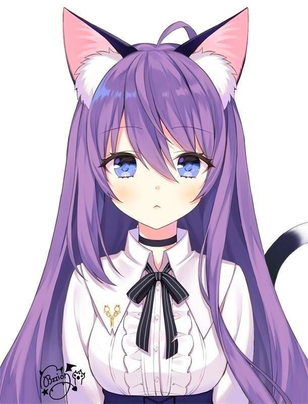

Аніме семпай це популярний мем який щас сильно розповсюджується. \\*+*//

Аніме — це японська анімація, яка вже давно стала всесвітнім культурним феноменом. Головна її відмінність від західних мультфільмів полягає в тому, що аніме створюється не лише для дітей, а переважно для підлітків, молоді та дорослих. Воно охоплює глибокі філософські теми, складні психологічні сюжети та найрізноманітніші жанри.
Ключові особливості аніме
Поділ за аудиторіями: В аніме є чіткі демографічні категорії. Наприклад, сьонен — для хлопців-підлітків (багато екшену, дружби, боїв), сьодзьо — для дівчат (фокус на романтиці та стосунках), сейнен та дзьосей — для дорослих чоловіків та жінок (більш зрілі, похмурі або реалістичні сюжети).
Жанрове розмаїття: Окрім звичних комедій чи детективів, тут популярні специфічні жанри. Наприклад, ісекай (історії про «попаданців» в інші або ігрові світи) чи меха (сюжети про гігантських бойових роботів).
Візуальний стиль: Для аніме характерні великі виразні очі персонажів (через які передаються емоції), яскраве незвичне волосся та детально промальовані фони.
Що подивитися: Легендарні тайтли
Якщо ви хочете почати знайомство з цим світом, ось кілька найкращих варіантів:
«Зошит смерті» (Death Note): Культовий психологічний детектив про протистояння геніального студента, який отримав силу вбивати людей силою думки, та найкращого у світі детектива.
«Атака титанів» (Attack on Titan): Масштабне і похмуре темне фентезі про боротьбу людства проти гігантських людожерів за величезними стінами.
Шедеври Хаяо Міядзакі: Повнометражні фільми «Унесені призраками» або «Мій сусід Тоторо» від Studio Ghibli — це класика світового кінематографа, яка підходить для будь-якого віку.
«Клинок, який розтинає демонів» (Demon Slayer): Сучасний суперхіт із неймовірною якістю графіки та бойових сцен про хлопця, який рятує свою сестру.
Де дивитися аніме українською?
Сьогодні в Україні аніме-культура розвинена дуже потужно, і дивитися контент рідною мовою простіше, ніж будь-коли:
Офіційні платформи: Netflix та Crunchyroll (головний світовий сервіс для аніме) активно додають українські субтитри та офіційний дубляж до головних новинок.
Спільноти фандабу: Такі студії та об'єднання, як «Анімевост» (AnimeVOST UA), «FanVoxUA», «КачУр», «Glass Moon» та інші, вже багато років озвучують тисячі серіалів українською мовою. Їхні релізи легко знайти на українських спеціалізованих онлайн-кінотеатрах (наприклад, Anitube або UASerials).